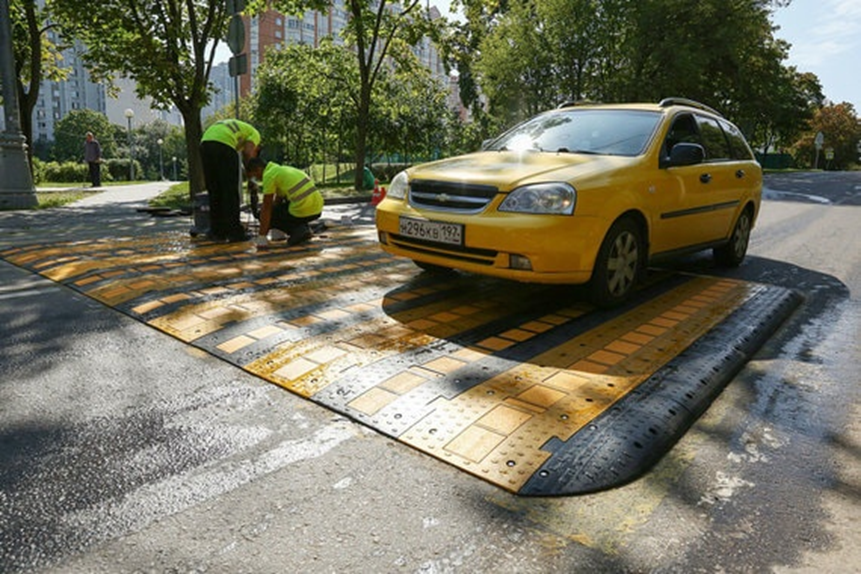
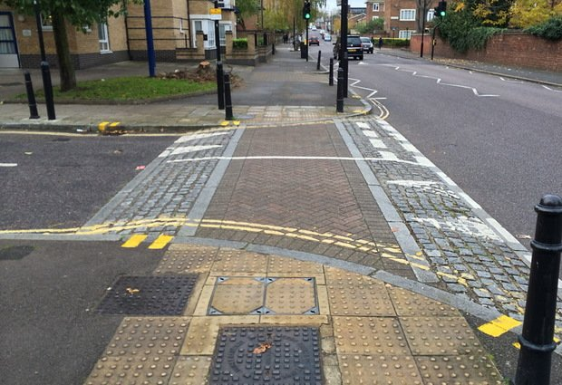

Приподнятые пешеходные переходы#
Приподнятый переход — это место, где тротуар и/или велодорожка пересекается с проезжей частью, но при этом поверхность перехода через проезжую остается на той же отметке по высоте, что и поверхность тротуара. Для автотранспорта же предусмотрены пологие пандусы для заезда и съезда с приподнятого перехода.
Стандарты#
Сейчас для таких переходов действует:
-ГОСТ 32944-2014
Дороги автомобильные общего пользования
ПЕШЕХОДНЫЕ ПЕРЕХОДЫ
Классификация. Общие требования
Приподнятый пешеходный переход: Вид технических средств организации дорожного движения, представляющий собой конструкцию в виде возвышения на проезжей части дороги, устанавливаемую или устраиваемую на проезжей части дороги с целью принудительного ограничения скорости движения транспортных средств, установленной дорожными знаками или правилами дорожного движения государств - членов Евразийского экономического союза.
4.7 Устройство наземных пешеходных переходов с обозначением их дорожными знаками "Пешеходный переход" по ГОСТ 32945 и (или) горизонтальной дорожной разметкой по ГОСТ 32953 осуществляется в местах установившихся пешеходных связей и на перекрестках при интенсивности движения транспорта более 50 ед./ч и интенсивности движения пешеходов более 150 чел./ч (III зона).
6.2.11 В сложившихся неблагоприятных условиях для движения пешеходов (на участках концентрации дорожно-транспортных происшествий, вблизи детских учреждений и т.п.) необходимо осуществлять поэтапное совершенствование организации дорожного движения на обозначенных пешеходных переходах, включающее в себя: - устройство над основной проезжей частью приподнятого пешеходного перехода;
Зачем ?#
- Приподнятые переходы выполняют функцию искусственной неровности, перед которой водители машин вынуждены снижать скорость. Это повышает вероятность того, что они вовремя заметят пешехода или велосипедиста и пропустят его. В случае же, если водитель машины все-таки не уступит дорогу, невысокая скорость движения позволит избежать тяжелых последствий.
- Приподнятые переходы однозначно фиксируют приоритет пешеходов и велосипедистов непосредственно в геометрии улицы: тротуар и велодорожка остаются непрерывными, а проезжая часть прерывается. Автомобили пересекают территорию пешеходов и велосипедистов, а не наоборот.
- Приподнятые переходы позволяют пешеходам и велосипедистам «посуху» пересекать проезжую часть во время сильных дождей. В дождливую погоду вода стекает из дворов на улицы по местным проездам, где попадает в ливневую канализацию. По этой причине выезды из дворов зачастую превращаются в бурные реки, которые невозможно преодолеть, не промочив ноги. Приподнятые переходы служат своеобразными «мостами» через эти бурные потоки.
Примеры:#
Неудачные#

Переход хоть и приподнят над дорогой, но не идёт вровень с тротуаром, поэтому не будет удобен для пешеходов. Источник фотографии 1

Переход не имеет специальных обозначений, а также выполнен из гранитный плит и слишком скользкий. Источник фотографии 2
Удачные#

Источник фотографии 3

Источник фотографии 4